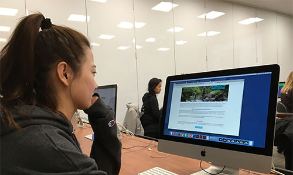

What I immediately noticed was that the projects in my comparative research were mostly lists of facts and information, so interaction and thus engagement was limited. As a result, my user in the test turned her attention to entirely different websites in minutes. While my user did not look bored, the fact that she switched from the project topic to television means I need to make sure I produce a project that is worthwhile.
1. Project needs a way to hold on to a user's attention. 2. The project needs to be able to have multiple interactive elements. 3. In addition to multiple elements, the interactions must be meaningful. 4. The project needs to take time to complete, not just glossed over. 5. Provide an interface that is easy enough for a child to understand. 6. The project needs a visual style that appeals to target audience (most likely children or college students). 7. As the project will display data and information, it needs to be digestable. 8. The information also needs to be up to date to make the project credible. 9. The project needs to work on desktop and mobile formats. 10. This project needs to be able to be appealing after repeat viewings.